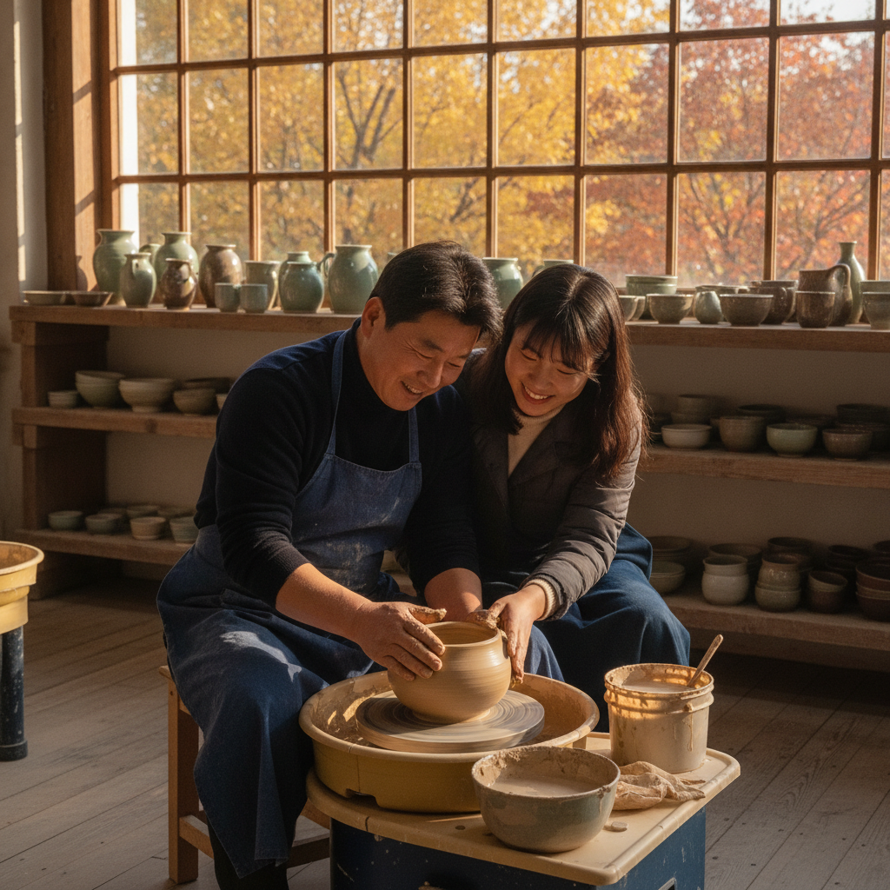
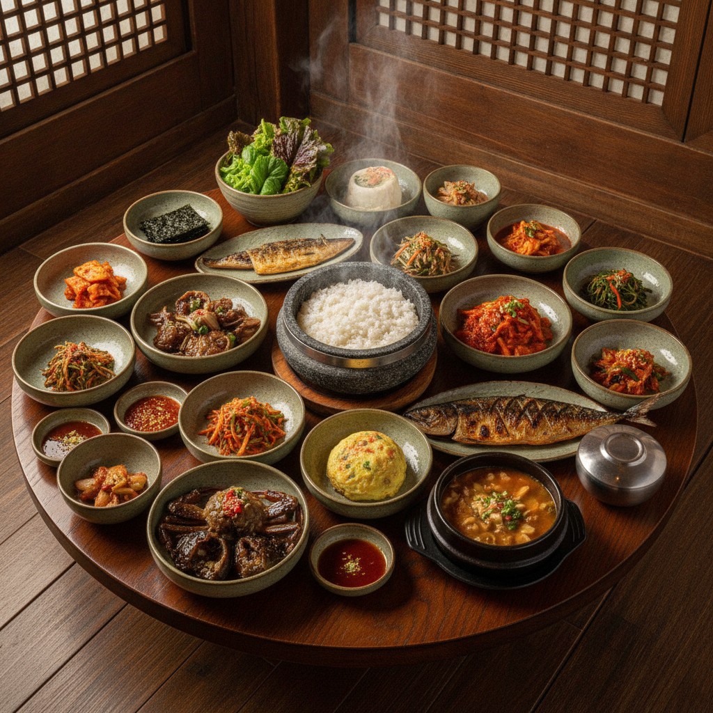
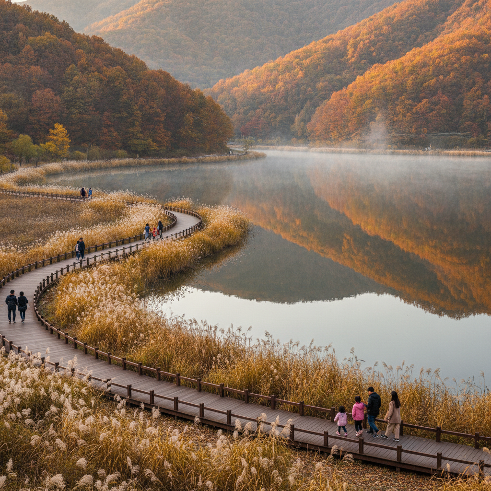

경기 이천 도자기마을 가을 나들이 — 물레 체험 코스와 이천쌀밥 정식 가격 비교 체크리스트
가을 햇살이 완연한 9월 말과 10월 초는 수도권 근교에서 공예 문화와 제철 식도락을 동시에 즐기기에 가장 완벽한 계절입니다. 경기도 이천의 대표 도예 명소인 예스파크(藝's Park)와 사기막골 도예촌에서는 직접 손으로 흙을 빚어보는 물레 성형 체험을 1인당 2만 5천 원에서 4만 원 선에 경험할 수 있습니다.
도자기 체험 후에는 막 수확한 2026년 햅쌀로 돌솥밥을 지어 올리는 이천 쌀밥 한정식 거리에서 간장게장·직화불고기 등이 어우러진 푸짐한 한 상을 1인 기준 기본 1만 8천 원부터 특선 3만 5천 원 안팎의 합리적인 가격대로 즐길 수 있습니다.
공방별 체험 비용과 쌀밥 정식 구성 비교표, 그리고 가을 호수 산책로가 아름다운 설봉공원까지 묶은 당일치기 추천 동선 체크리스트를 확인해 보세요.

이천 예스파크 도예 공방에서 진행되는 가을 물레 성형 체험 현장 / AI 제작 이미지
01 | 수도권 근교 가을 당일치기 명소 이천 도자기예술마을 예스파크
서울 강남이나 경기 남부권에서 차량으로 약 50분에서 1시간 10분이면 닿을 수 있는 경기도 이천시 신둔면의 예스파크(藝's Park)는 국내 최대 규모의 계획형 도예 예술인 마을입니다.
약 12만 평의 드넓은 부지 위에 300여 명의 도예 장인과 공예 작가들이 실제 거주하며 작업실, 갤러리 쇼룸, 체험 공방을 직접 운영하고 있어 마을 전체가 하나의 거대한 야외 미술관 같은 고즈넉한 정취를 자아냅니다.
마을 중앙을 가로지르는 학암천 수변 산책로를 따라 가을바람을 맞으며 산책하기에 최적이며, 붉게 물들기 시작하는 활엽수와 감각적인 현대식 공방 건축물들이 어우러져 가족 나들이는 물론 데이트 코스로도 높은 인기를 자랑합니다.
마을 입구에는 관광안내소와 넓은 무료 공영주차장이 완비되어 있어 초행길 방문객도 주차 스트레스 없이 여유로운 관람을 시작할 수 있습니다.
02 | 초보자와 어린이를 위한 물레 성형 및 핸드페인팅 도예 체험 가이드
도예 체험은 크게 회전하는 물레 위에서 부드러운 백토를 직접 만지며 기물을 빚어내는 물레 성형 체험과, 이미 초벌구이된 백자 기물 위에 도자기 전용 안료로 그림이나 글씨를 새겨 넣는 핸드페인팅 체험으로 나뉩니다.
처음 흙을 만져보는 초보자나 어린이의 경우에도 전담 도예 강사가 손을 맞잡고 1:1로 성형을 지도해 주기 때문에 밥그릇, 샐러드 볼, 머그컵, 화병 등 원하는 형태를 실패 없이 완성할 수 있습니다.
손끝으로 차가운 흙의 질감을 느끼며 집중하는 과정은 복잡한 일상에서 벗어나 정서적 안정을 얻는 훌륭한 힐링 테라피 역할을 합니다. 손으로 빚은 나만의 기물은 건조와 유약 시유, 1250℃ 고온 재벌 과정을 거쳐 약 3~4주 후 단단하고 실용적인 생활 식기로 완성됩니다.
완성된 작품은 공방을 재방문하여 직접 수령하거나 택배 배송(택배비 약 4,000~5,000원 별도)으로 안전하게 자택에서 받아볼 수 있습니다.
03 | 주요 공방별 체험 프로그램 종류 및 1인당 비용 비교표
예스파크 내 공방들은 프로그램 구성과 굽는 소성 방식에 따라 가격대가 세분화되어 있습니다. 방문 전 취향과 예산에 맞추어 알맞은 공방을 선택할 수 있도록 주요 체험 유형별 비용을 비교해 드립니다.
| 체험 프로그램 종류 |
소요 시간 |
1인 기준 비용 |
완성 결과물 및 특징 |
추천 대상 |
| 전통 전기물레 체험 |
약 40~50분 |
30,000원 ~ 40,000원 |
밥그릇·국그릇·머그컵 중 택 1 (재벌 소성 포함) |
성인 커플, 초등 고학년 이상 |
| 핸드빌딩 (손성형) |
약 60분 |
25,000원 ~ 35,000원 |
접시·캐릭터 받침대·미니 화병 (틀 성형) |
유아 및 어린이 동반 가족 |
| 초벌 도자기 핸드페인팅 |
약 40~60분 |
20,000원 ~ 30,000원 |
머그잔 또는 원형 접시에 나만의 그림 채색 |
그림 그리기를 좋아하는 청소년·가족 |
| 물레 + 페인팅 패키지 |
약 80~90분 |
45,000원 ~ 55,000원 |
직접 빚은 기물에 건조 후 그림까지 일괄 완성 |
심도 있는 도예 공예를 원하는 입문자 |
대부분의 인기 공방은 가을 주말의 경우 100% 사전 예약제로 운영되므로 네이버 지도 예약이나 공방 유선 전화를 통해 방문 최소 3~5일 전 시간대를 확정하는 것이 좋습니다.

갓 지은 햅쌀 돌솥밥과 스무 가지 반찬이 어우러진 이천 쌀밥 정식 한 상 / AI 제작 이미지
04 | 갓 지은 햅쌀의 풍미를 맛보는 이천 쌀밥 한정식 거리와 대표 메뉴
도예 체험으로 기분 좋은 피로감이 느껴질 때쯤 반드시 찾아야 할 코스는 이천 3번 국도를 따라 형성된 '이천 쌀밥 한정식 거리'입니다.
임금님 진상품으로 유명한 이천 쌀은 찰진 윤기와 씹을수록 배어 나오는 은은한 단맛이 독보적이며, 특히 9월 하순부터 출하되는 햅쌀은 수분감이 풍부하여 최상의 밥맛을 자랑합니다.
이천 쌀밥 정식의 핵심은 주문 즉시 불에 올려 지어내는 뜨거운 돌솥밥입니다. 밥을 밥공기에 덜어낸 뒤 바닥에 눌어붙은 구수한 누룽지에 따뜻한 둥굴레 보리차를 부어 숭늉을 만들어 두는 것은 한국 전통 식사의 정수입니다.
여기에 직화로 구워 불향을 입힌 제육불고기, 짭조름하고 살이 꽉 찬 간장게장, 겉은 바삭하고 속은 촉촉한 생선구이, 구수한 시골 된장찌개 등 20여 가지 정갈한 밑반찬이 한 상 가득 차려집니다.
05 | 이천 쌀밥 정식 구성별 가격 비교와 주말 웨이팅 최소화 팁
이천 쌀밥 정식 식당들은 메인 요리의 가짓수에 따라 기본 정식부터 특정식, 게장·갈비찜 특선 코스까지 다양한 선택지를 제공합니다.
| 식당 메뉴 등급 |
1인 기준 가격대 |
주요 상차림 구성 |
특징 및 만족도 포인트 |
| 이천 쌀밥 기본 정식 |
17,000원 ~ 20,000원 |
돌솥밥 + 된장찌개 + 제육볶음 + 생선구이 + 기본 나물 12종 |
담백하게 밥 본연의 맛을 즐기는 실속형 가성비 메뉴 |
| 간장게장 / 불고기 정식 |
25,000원 ~ 29,000원 |
기본 정식 + 암꽃게 간장게장 또는 직화 소불고기 추가 |
가장 선호도 높은 대표 인기 구성으로 부모님 식사에 추천 |
| 스페셜 수라상 정식 |
33,000원 ~ 38,000원 |
돌솥밥 + 한우 육회 + 소갈비찜 + 간장게장 + 보쌈 + 조기구이 |
가족 모임 및 환갑·기념일에 어울리는 격조 높은 풀코스 |
가을철 주말 점심시간(11시 30분 ~ 14시)에는 대표 식당들의 대기 시간이 40분에서 1시간 이상 발생할 수 있습니다. 주말 웨이팅 팁으로는 오전 11시 오픈런에 맞추어 이른 점심을 먹고 오후에 도예마을로 이동하거나, 테이블링·캐치테이블 등 모바일 원격 줄서기 앱을 미리 활용하는 것을 권장합니다.
06 | 가을 억새와 호수 산책로가 아름다운 설봉공원과 설봉호 둘레길
배부른 점심 식사를 마친 후에는 소화를 겸해 가을 정취를 만끽할 수 있는 이천의 대표 도심 휴양지 '설봉공원'으로 발걸음을 옮겨보세요.
설봉산 자락에 자리 잡은 설봉공원은 잔잔한 설봉호를 중심으로 약 1.5km에 달하는 무장애 수변 둘레길이 완만하게 조성되어 있어 남녀노소 누구나 편안하게 걸을 수 있습니다.
호숫가를 따라 은빛 억새와 가을 코스모스가 수려하게 피어나며, 호수 한가운데에서 시원하게 뿜어져 나오는 고사분수의 물줄기와 호수면에 비치는 푸른 하늘이 탄성을 자아냅니다.
공원 내에는 이천시립월전미술관과 도자 세라피아가 함께 자리하고 있어 도예 야외 조형물 전시를 관람하며 멋진 기념사진을 남기기에 더할 나위 없이 좋습니다. 설봉공원 주차장 역시 무료로 개방되어 있어 부담이 없습니다.

은빛 억새와 푸른 호수가 어우러진 이천 설봉공원 가을 둘레길 전경 / AI 제작 이미지
07 | 사기막골 도예촌과 예스파크(艺’s Park) 구역별 쇼핑 및 관람 차이점
이천에서 도자기를 구매하거나 구경할 때는 신흥 도예마을인 예스파크와 전통을 자랑하는 사기막골 도예촌의 성격을 비교하여 방문하는 것이 효율적입니다.
예스파크는 공방 작가들의 독창적인 예술 작품, 현대적 감각의 인테리어 오브제, 개인 갤러리 중심의 고급 생활 식기가 주를 이룹니다. 카페거리와 공예 체험 인프라가 쾌적하게 조성되어 있어 체류형 관광에 적합합니다.
반면 사기막골 도예촌은 골목길을 따라 뚝배기, 옹기, 반상기 세트, 다도용 찻잔 등 실생활에서 가성비 있게 쓸 수 있는 전통 식기를 집중 판매하는 상점가 성격을 띱니다. 직접 손으로 깎아 만든 뚝배기나 투박한 질감의 그릇을 합리적인 도매 가격으로 발품 팔아 구매하고 싶다면 사기막골이 제격입니다.
08 | 주차장 위치 및 무료 주차 팁과 대중교통(경강선 신둔도예촌역) 접근법
자차를 이용해 방문하는 경우, 예스파크에는 가마마을, 회랑마을, 별마을, 사부작길 등 마을 각 구역마다 넉넉한 공영 무료 야외주차장이 완비되어 있어 주차 요금 걱정이 전혀 없습니다.
사기막골 도예촌 역시 마을 입구에 전용 무료 공영주차타워와 노상 주차 공간이 잘 정비되어 있습니다. 다만 주말 13시~16시 피크 시간대에는 사기막골 공영주차장이 만차될 수 있으므로 회전율이 빠른 하천변 임시 주차구역을 확인하시는 것이 좋습니다.
대중교통으로 방문하는 뚜벅이 여행객에게도 접근성이 뛰어납니다. 수도권 전철 경강선 '신둔도예촌역'에서 하차하면 예스파크 정문까지 택시로 기본요금 거리(약 3~4분 소요, 도보 약 15~20분)에 위치해 있어 자가용 없이도 산뜻한 당일치기 여행이 가능합니다.
09 | 이천 가을 당일치기 식도락·공예 힐링 추천 동선 체크리스트
알찬 당일치기 하루를 완성할 수 있도록 시간대별 최적 동선과 필수 체크리스트를 제안합니다.
📅 가을 이천 당일치기 추천 일정표
· 10:00 ~ 11:30 : 예스파크 도착 후 사전 예약한 공방에서 나만의 물레 성형 또는 핸드페인팅 도예 체험 진행
· 11:30 ~ 13:00 : 이천 쌀밥 한정식 거리로 이동, 햅쌀 돌솥밥과 간장게장·제육불고기 정식 점심 식사
· 13:30 ~ 15:00 : 설봉공원으로 이동, 가을 억새길과 설봉호 수변 산책로 걷기 및 카페 휴식
· 15:30 ~ 17:00 : 사기막골 도예촌 방문, 실생활용 도자기 그릇 및 뚝배기 알뜰 쇼핑 후 귀가
💡 방문 전 최종 확인 체크리스트
1. 도예 공방 체험 시 긴 손톱은 점토 성형에 방해되므로 미리 단정하게 다듬고 편안한 바지를 착용하세요.
2. 물레 작업 중 흙탕물이 튈 수 있으니 공방에서 제공하는 앞치마를 반드시 착용하세요.
3. 햅쌀 정식 식당 방문 시 웨이팅 앱(캐치테이블·테이블링) 사전 접수 가능 여부를 미리 확인하세요.
4. 도자기 배송을 신청할 경우 파손 보상 규정과 수령 주소를 다시 한번 꼼꼼히 확인하세요.
#이천도자기마을
#이천예스파크
#도자기체험비용
#물레체험
#이천쌀밥정식
#이천쌀밥가격비교
#설봉공원둘레길
#사기막골도예촌
#이천가을나들이
#수도권당일치기여행